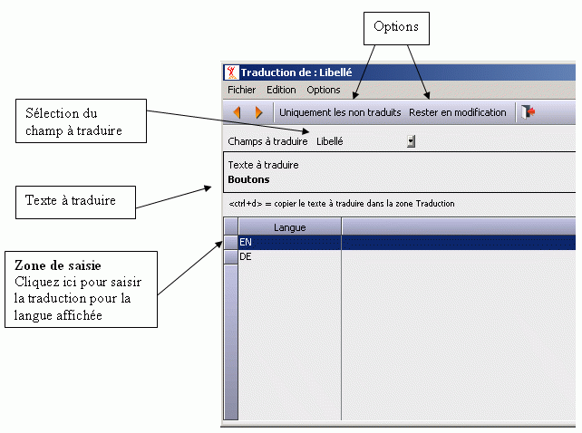

Pour accéder à la traduction il faut appeler le choix Traduire du menu Edition.
Si ce choix est grisé c'est
- qu'il n'y a pas de langues déclarées pour la traduction,
- ou qu'il n'y pas de champ multilingue dans le zoom,
- ou que vous n'avez pas les droits suffisants pour entrer dans la traduction.
Lorsque vous entrez dans la traduction, le zoom vous propose de traduire les champs de la fiche courante. Vous pouvez ensuite changer de fiche par les boutons Suivant et Précédent.

|
Sélection du champ à traduire |
Si la fiche contient un seul champ multilingue (ce qui généralement le cas), cette zone n'apparaît pas à l'écran. Si la fiche contient plusieurs champs multilingues, vous devez choisir ici quel champ vous voulez traduire. |
|
Texte à traduire |
Texte dans la langue de base. C'est le texte qui est dans le fichier traité par le zoom. |
|
Zone de saisie |
La saisie se fait directement dans le tableau qui présente une ligne par langue. Pour entrer en saisie sur une ligne, cliquez sur la colonne de contrôle du tableau. |
|
Option : Uniquement les non traduits |
Lorsque vous faites Suivant/Précédent pour changer de fiche, le zoom vous propose la fiche suivante/précédente. Si l'option est cochée, le zoom vous propose la fiche suivante pour laquelle la traduction n'existe pas. |
|
Option : Rester en modification |
Si cette option est sélectionnée, dès que vous avez validé une traduction, zoom passe automatiquement en modification sur la fiche suivante. Si l'option Uniquement les non traduits est sélectionnée, zoom passe automatiquement à la fiche suivante pour laquelle la traduction n'existe pas. |
Remarque :
La frappe de Ctrl+D permet de recopier le texte à traduire dans la zone en cours de saisie.